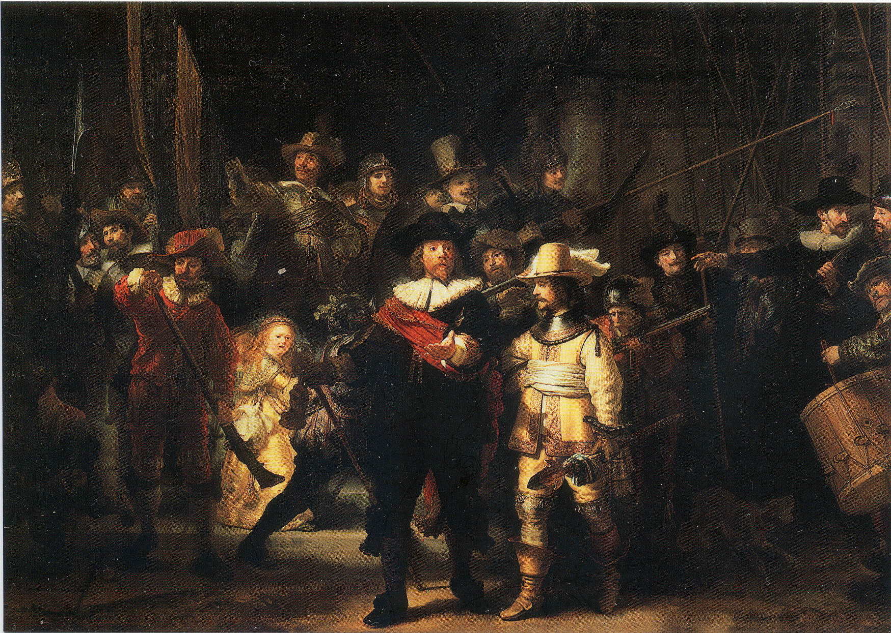

빛은 그 자체의 속성에 의해 직접광, 확산광, 반사광, 림라이트로 구분이 되고, 그 속성의 조화에 따라 하이키 조명과 로우키 조명으로 나눠질 수 있다.
직접광이란, 조명으로부터 아무런 방해도 없이 빛이 그대로 사물을 부딪힌 것을 의미한다. 확산광은 이와 반대로, 빛이 사물에 부딪히기 전에 장애물을 만나 산란된 상태로 사물에 부딪힌 것을 의미한다. 직접광은 확산광에 비해 강렬하고, 하이라이트가 좁게 나타난다. 이에 비해 확산광은 직접광에 비해 약하고, 하이라이트가 넓게 퍼진 채로 나타난다. 이러한 특징들의 대표적 예시에는 손전등을 가까이서 비추었을 때랑 멀리서 비추었을 때로 쉽게 예를 들 수 있다. 손전등이 어떤 사물과 가까이 있을 때에는 빛이 어두운 환경으로 쉽게 퍼져나가지 못해 좁고 강렬한 하이라이트가 만들어진다. 반면에 손전등이 멀어지면 빛이 어두운 환경에서 많이 산란되어 하이라이트가 넗게 퍼지고 약해진다.
반사광이란 어떤 사물에 부딪혀 반사된 빛들을 말한다. 이것은 바닥이 될 수도 있고, 주변에 반사되는 기타 물체일 수도 있다. 제일 중요한 것은 반사는 한번 되는 것이 아니라 여러번 되고, 우리 눈에서는 약 2~3번 정도의 반사 정보만 들어오게 된다. 반사광은 확산광의 성질과 비슷하고 재질이 빛에 민감한 정도에 따라 더 명확하게 보여진다.
환경광이란, 대기중에 산란되어 있는 색을 말한다. 숲 속에 들어갔을 때 우리는 파랗게 되고, 비오는날에는 우리가 회색이 된다. 어찌보면 반사광과 비슷해보이지만, 반사광은 사물의 일부분에 한정되어 영향을 미치는 것이라면 환경광은 사물 전체에 영향을 미치는 은은한 색이다. 이 색에 따라 우리는 바다에서 수영을 하는지, 아니면 노을을 바라보고 있는지, 혹은 아침햇살을 강렬하게 받고 있는지 구분하게 된다.
림라이트란, 사물의 실루엣에 보이는 강한 하이라이트로, 주로 모델 사진에서 관찰할 수 있다. 이 림라이트는 배경과 사물을 확실하게 구분할 수 있도록 보조해주는 역할을 하며, 우리 눈에 강조가 될 수 있게 한다.
하이키 조명이란, 눈오는 날이나 흐린 날과 같이 빛이 확산되어 하이라이트가 강렬하지 않는 상태를 의미하는 것이다. 특징은 빛의 대비가 줄어드는 것인데, 훨씬 화사한 이미지를 얻을 수 있다. 로우키 조명은 밝은 날의 이미지를 상상하면 간단한데, 하이라이트가 강렬하고, 빛이 확산되지 않아 명암구분이 확실하다는 특징이 있다 대표적인 예시로는 구름 끼지 않은 맑은날, 한가지의 조명이 비추는 상황에서 자주 사용된다.